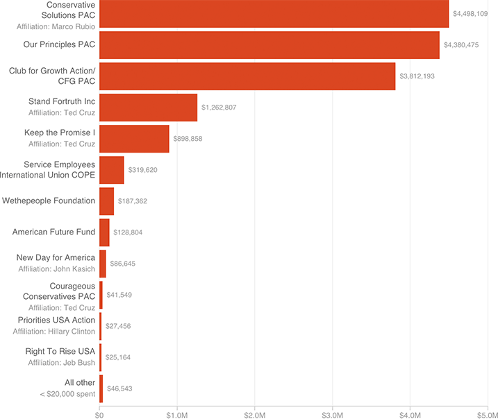

Independent Groups Spending Millions To Attack Trump
Seventeen groups — many of them conservative — have spent more than $16 million on attack ads, direct mail and related efforts opposing Republican front-runner Donald Trump.
